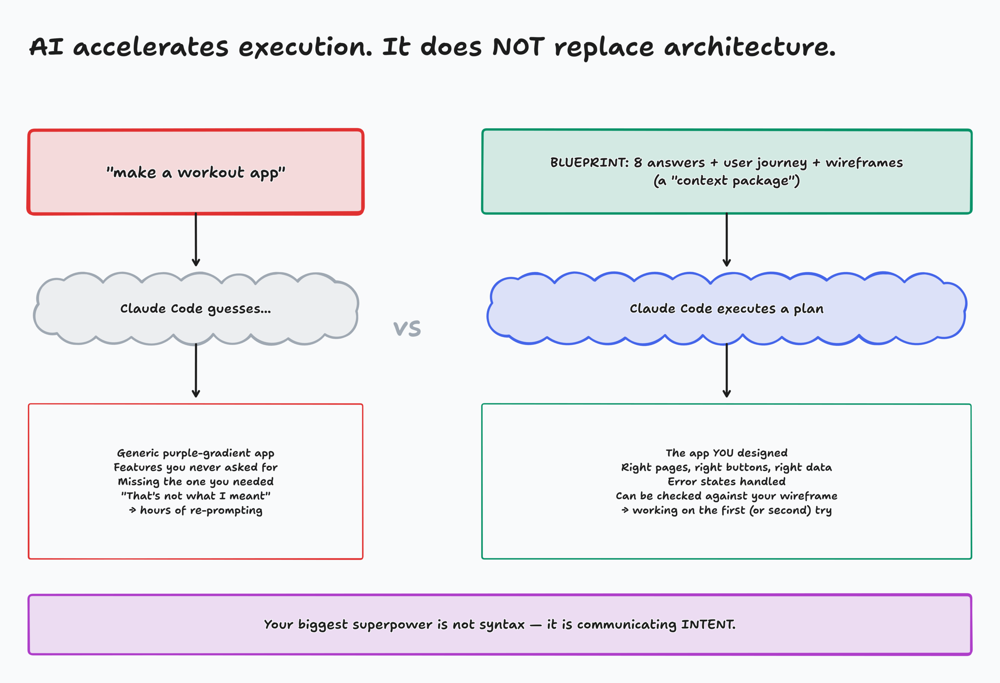
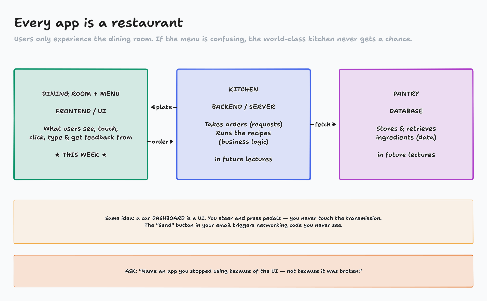
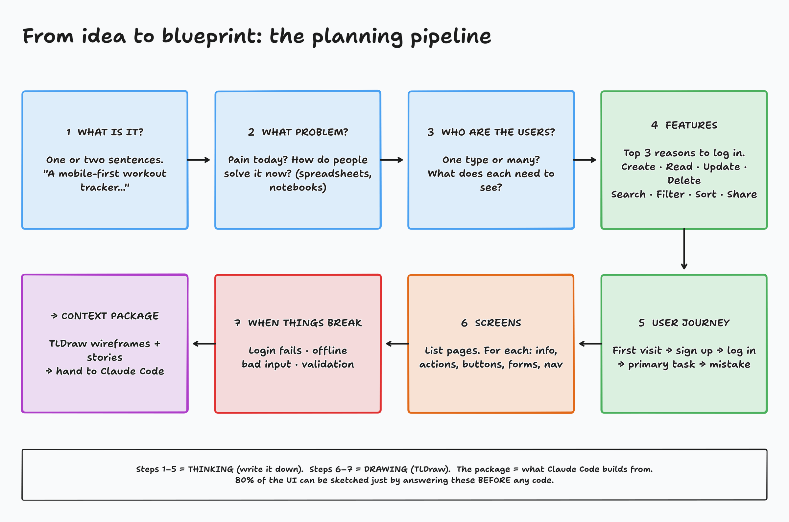

Building Applications · Single Page Apps · Part 1 of 2
UI Fundamentals: draw the blueprint before Claude builds
What a UI is, why it matters, and how to plan one so an AI can build it.
By the end of today you can
Explain what a user interface is and why users judge your whole app by it
Answer the 8 planning questions for any app idea
Write a user journey, including what happens when things go wrong
Sketch lo-fi wireframes in TLDraw that Claude Code can build from
Next lecture, Claude Code turns today's blueprint into a working app.
Claude Code can build almost anything. It can't read your mind.
Your superpower isn't syntax. It's communicating intent.

diagrams/L1-02-vague-vs-blueprint.tldr
A user interface is everything a user can see, touch, click, type into, or get feedback from
Buttons, menus, icons
Forms, text fields, sliders
Images and text
Navigation
Feedback: errors, toasts, spinners
It's a bridge
Computers speak code and data. People speak buttons. When you click Send on an email, you never write the networking code. The UI hides it behind one button.

diagrams/L1-01-restaurant.tldr
Activity: UI Crime Scene
I'm sharing a page with numbered exhibits. Each one is a tiny UI that commits a crime.
Take the exhibit number I assign you. Click it, type in it, break it.
In chat: #number: the crime + how you'd fix it
Then I'll call on a few of you to make your case
Page: activity-ui-crime-scene/index.html
Every crime was a planning question nobody answered
"Error 0x8004"
What should happen when login fails?
Form wiped my input
What happens when validation fails?
Deleted with no warning
What actions can users take, and which can't be undone?
Blank list, no hint
What does a first-time user see?
Message vanished offline
What if the internet disconnects?
Unlabeled icons
What navigation exists on each page?
If you don't decide, Claude decides for you, or nobody does.

diagrams/L1-03-planning-pipeline.tldr
Identify your application
What is it? One or two sentences.
"A lightweight, mobile-first workout tracker that lets users quickly log exercises, sets, reps, and weight during a workout, and view their history over time."
What problem does it solve?
Why would someone use it?
What's frustrating about the current process?
How do people solve it today?
Workout Tracker
Problem: "I log workouts in spreadsheets and notebooks. It's messy and I can't really track my progress."
Today: notebook, Notes app, memory
Who are the users?
Who will use it?
Is there more than one type of user?
What is each one responsible for?
What does each one need to see?
Different users, different interfaces
A food delivery app has 3 UIs:
Customer: browse and order
Driver: pickups and map
Restaurant: incoming orders
Workout Tracker: one user, the lifter.
Clarify features: users don't care about your code, they care about finishing tasks
User goals
What are they trying to accomplish?
Top 3 reasons they open the app?
What do they do most often?
Which actions create value?
Workout Tracker, top 3
Log a set fast, mid-workout
See what I lifted last time
See that I'm getting stronger
Information and actions: think CRUD
C
Create
Log a new workout or set
R
Read
View history and records
U
Update
Fix a typo in a set
D
Delete
Remove a set or workout
Also: search · filter · sort · export · share
And: what should users never see? (other people's data, passwords, admin tools)
Every major action usually becomes a feature, and usually a button.
Write the user journey: the step-by-step story of using your app
What happens when a user…
first visits?
signs up / logs in?
completes their main task?
makes a mistake?
Opens app → sees last workout
Taps Start Workout
Picks exercise, logs sets
Types "abc" for reps → red hint under the field, nothing else cleared